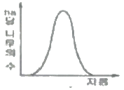
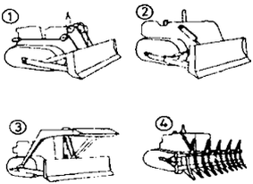
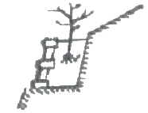
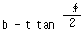
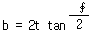
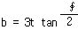
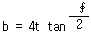

산림기사 (2007-03-04 기출문제)
1과목: 조림학
1. 토양 부식의 기능에 관한 설명으로 옳은 것은?
- 양분의 유실을 방지한다.
- 토양미생물의 활동을 억제한다.
- 중금속의 유해작용을 증가시킨다.
- 지온의 급격한 저하 혹은 상승을 촉진한다.
(정답률: 60%)

2. 종자의 발아세에 대한 설명으로 옳은 것은?
- 포장에서 시험한 발아종자 알 수의 비율
- 종자를 잘라서 본 내부의 싱싱하고 건전한 종자 알수의 비율
- 실험실의 발아상에서 직접 발아한 종자 알 수의 비율
- 발아시험에서 일정기간 내에 발아하는 종자 알수의 비율
(정답률: 81%)
3. 다음 중 묘포의 적지로 가장 적합한 곳은?
- 평탄한 점질토양
- 배수가 좋은 사양토
- 한랭한 지역의 북향
- 남쪽지방에서의 남향
(정답률: 80%)
4. 판갈이 (상체) 밀도에 대한 설명 중 옳은 것은?
- 묘목이 클수록 밀식한다.
- 양수는 음수보다 밀식한다.
- 땅이 비옥할수록 소식한다.
- 잎과 가지가 확장하는 것은 밀식한다.
(정답률: 86%)
5. 다음 중 음수(陰樹)로만 묶인 것은?
- 향나무, 주목
- 비자나무, 전나무
- 버드나무, 삼나무
- 느티나무, 낙엽송
(정답률: 71%)
6. 임지가 비옥하거나 식재목이 광선을 많이 요구할 때 실시하며, 소나무나 낙엽송 등의 조림지에 적합한 밑깎기 방법은?
- 전면깎기
- 줄깎기
- 둘레깎기
- 솎아깎기
(정답률: 63%)
7. 음이온의 형태로 수목의 뿌리로부터 흡수되는 것은?
- NH4
- PO4
- Ca
- Na
(정답률: 52%)
8. 목본식물의 피자식물에서는 계화를 억제하나, 나자식물의 경우는 개화에 긍정적으로 작용하는 것은?
- IAA
- IBA
- GA3
- NAA
(정답률: 66%)
9. 식물 생리 활성물질 중에서 노화 촉진효과가 있는 것은?
- IAA
- Abscisic acid
- Cytokinin
- Gibberellin
(정답률: 66%)
10. 지위지수는 임령에 대한 무엇의 표시인가?
- 흉고직경
- 수관폭
- 지하고
- 수고
(정답률: 66%)
11. 다음 그림과 같은 임분 구조를 갖는 것은?

- 보안림
- 교림
- 동령림
- 국유림
(정답률: 86%)
12. 다음 중 잎수가 다섯 개인 것은?
- 섬잣나무
- 리기다소나무
- 소나무
- 방크스소나무
(정답률: 73%)
13. 환원법에 의하여 종자의 발아력 시험을 할 때 테룰루산칼륨(K2TeO4)의 주용 사용 농도는?
- 1%
- 10%
- 20%
- 30%
(정답률: 44%)
14. 종자결실에 영향을 주는 인자 중 내적인자는?
- 광선
- 임목의 밀도
- 수분
- 유전성
(정답률: 75%)
15. 다음 중 택벌림의 특성으로 틀린 것은?
- 택벌림의 구조는 규칙적이고 지속적이다.
- 택벌림은 산림생육계와 관련하여 향상성과 자기조절 능력을 가진다.
- 택벌림의 수관은 잘 발달하여 안정상태를 이룬다.
- 택벌은 대경재 생산을 가능하게 한다.
(정답률: 40%)
16. 다음 중 시비 후에 알칼리성 반응을 보이는 비료는?
- 요소
- 용성인비
- 유민
- 염화칼륨
(정답률: 33%)
17. 다음 중 우량묘목의 조건에 적합한 것은?
- 근원경이 큰 것
- T/R율이 상대적으로 큰 것
- 후기 생장이 왕성한 것
- 파종상에서 계속 생육시킨 것
(정답률: 32%)
18. 모수작업에서 종자를 공급할 목적으로 남겨놓은 모수의 임목은 벌채전 전체적의 보통 몇 %인가?
- 5 ~ 10%
- 30 ~ 40%
- 60 ~ 70%
- 80 ~ 90%
(정답률: 61%)
19. 이식을 하지 않고도 간단한 방법으로 이식의 효과를 부분적으로 얻을 수 있는 방법은?
- 단근
- 철선감기
- 심경
- 관수
(정답률: 79%)
20. 다음 중 가지치기의 효과로 볼 수 없는 것은?
- 무절(無節)의 완만재의 생산
- 하목(下木)의 보호 및 생장촉진
- 상림의 위해를 예방
- 부정아 발생 억제
(정답률: 68%)
2과목: 산림보호학
21. 다음 중 물에 타서 사용하는 약제가 아닌 것은?
- 액체
- 분체
- 유제(乳劑)
- 수화제
(정답률: 65%)
22. 다음 주 파이토플라스마에 의한 질병이 아닌 것은?
- 벚나무 빗자루병
- 오동나무 빗자루병
- 대추나무 빗자루병
- 뽕나무 오갈병
(정답률: 73%)
23. 주로 종실을 가해하는 해충이 아닌 것은?
- 줄노랑들명나방
- 복숭아명나방
- 밤바구미
- 솔알락명나방
(정답률: 64%)
24. 다음 중 약해에 대한 설명으로 틀린 것은?
- 농약에 저항성인 개체가 출현한다.
- 넓은 의미로는 농약 사용 후에 수목이나 인축에 생기는 생리적 장해현상을 말한다.
- 식물이 약해를 받으면 줄기, 잎, 열매 등의 변색, 낙엽, 낙과 등이 유발되고 심하면 고사한다.
- 약해는 한달시, 강풍 직후 또는 비가 온 후에 일어나기 쉽다.
(정답률: 43%)
25. 수목의 흰가루병에서 가을에 나타나는 표징은?
- 균사
- 자낭각
- 분생자병
- 분생포자
(정답률: 43%)
26. 다음 중 뿌리에 기생하는 것은?
- 새삼
- 오리나무더부살이
- 동백나무겨우살이
- 꼬리겨우살이
(정답률: 45%)
27. 다음 중 유리나방과(科), 명나방과(科), 솔나방과(科)를 포함하는 목(目)은?
- Blattaria
- Heniptera
- Lepidoptera
- Plecuplate
(정답률: 64%)
28. 다음 중 산림화재가 발생하기 가장 쉬운 계절은?
- 봄
- 여름
- 가을
- 겨울
(정답률: 60%)
29. 다음 중 포플러 줄기마름병에 대한 내병성이 가장 큰 품종은?
- Populus alba
- Populus euramericana 1-214
- Populus euramericana 1-476
- Populus alba × P . glandulosa
(정답률: 50%)
30. 소나무재선충의 수목간 이동방법으로 가장 옳은 것은?
- 스스로의 힘으로
- 매개충에 의하여
- 토양전염에 의하여
- 바람에 의하여
(정답률: 70%)
31. 다음 중 성충으로 월동하는 것으로만 묶인 것은?
- 독나방, 솔나방
- 소나무좀, 루비깍지벌레
- 박쥐나방, 가루나무좀
- 어스랭이나방, 밤바구미
(정답률: 69%)
32. 다음 중 솔잎혹파리 구제(驅除) 방법으로 가장 부적합한 것은?
- 약제 수간주입
- 포살
- 자연약제 살포
- 기생벌 이용
(정답률: 45%)
33. 산림화재의 예방법으로 효과적이지 않은 것은?
- 방화선 설치
- 간벌 및 가지치기 실시
- 통제화입(統制火入)
- 일제 동령림 조성
(정답률: 70%)
34. 연해의 방제법 중 임업적 방제법과 가장 관련이 없는 것은?
- 수종의 선택
- 작업법의 선택
- 연해 밤바람의 조성
- 석회를 사용하여 연해물질의 중화
(정답률: 60%)
35. 일화성(univoltine ) 곤충이란?
- 알에서 성충까지 1년에 1회 발생하는 곤충을 말한다.
- 알에서 성충까지 1년에 2회 발생하는 곤충을 말한다.
- 알에서 성충까지 1년에 3회 발생하는 곤충을 말한다.
- 알에서 성충까지 1년에 4회 이상 발생하는 곤충을 말한다.
(정답률: 79%)
36. 솔나방의 겨울철 생리습성을 이용한 방제법은?
- 수관에 약제를 살포한다.
- 수간에 짚이나 가마니를 감아놓아 유인 포살한다.
- 유아등을 가설하여 유인 포살한다.
- 솜풍치에 석유를 칠하여 유충을 포살한다.
(정답률: 62%)
37. 오동나무 탄저병에 대한 설명으로 옳은 것은?
- 주로 뿌리에 발생하여 뿌리를 썩게 한다.
- 주로 묘목의 줄기와 잎에 발생한다.
- 주로 열매에 많이 발생한다.
- 담자균이 균사상태로 줄기에 월동한다.
(정답률: 55%)
38. 다음 중 흡수성 해충(吸收性 害蟲)으로 분류되는 것이 가장 적합한 것은?
- 솔나방
- 박쥐나방
- 소나무깍지벌레
- 오리나무잎벌레
(정답률: 57%)
39. 밤나무 뿌리혹병균의 주요 침입 부위는?
- 상처
- 잎
- 기공
- 피목
(정답률: 70%)
40. 다음 중 기주교대를 하지 않는 병원균은?
- 소나무 잎떨림병균
- 배나무 붉은별무늬병균
- 잣나무 털녹병균
- 소나무 혹병균
(정답률: 39%)
3과목: 임업경영학
41. 표적 마케팅(target marketing)에 대한 설명으로 가장 옳은 것은?
- 대다수 구매자를 대상으로 대량생산, 대량유통, 대량판매를 목적으로 하는 시장 전략이다.
- 여러 속성 집단별로 세분하여 각 속성 그룹에 맞는 상품을 개발, 유통 판매하는 시장 전략이다.
- 다양한 상품의 디자인, 품질, 크기로 구매자의 선택폭을 넓게 하는 시장 전략이다.
- 경영 목표에 따라 상품, 생산 보다는 판매에 치중하는 시장 전략이다.
(정답률: 73%)
42. 어떤 임업용 건물의 취득원가는 1500만원이고 폐기할 때의 잔존가치는 300만원으로 예상되며, 그 내용연수가 50년이라고 할 경우 이 건물의 연간 감가상각비를 정액법으로 계산하면?
- 21만원
- 22만원
- 23만원
- 24만원
(정답률: 59%)
43. 투자비용의 현재가에 대하여 투자의 결과로 기대되는 현금유입의 현재가비용을 나타내는 것으로 투자효율을 결정하는 방법은?
- 수익ㆍ 비용율법
- 순 현재가치법
- 투자 이익률법
- 회수기간법
(정답률: 48%)
44. 자연휴양림 지침과 관련되 법적조치로 옳은 것은?
- 지침을 변경할 수 없다.
- 지침을 해제할 수 없다.
- 필요시 변경도 해제도 할 수 있다.
- 필요시 변경할 수 있으나 해제는 할 수 없다.
(정답률: 60%)
45. 5년 전의 임분재적이 80m3/ha이고, 현재의 임분재적이 100m3/ha일 경우 Pressler식에 의한 임분재적 성장률은?
- 3.3%
- 4.4%
- 5.5%
- 6.6%
(정답률: 62%)
46. 협업경영의 원칙이 아닌 것은?
- 공동이용
- 공동출자
- 공동충익
- 균등분배
(정답률: 36%)
47. 다음 중 측고기 사용에 대한 설명으로 틀린 것은?
- 측정위치는 측정하고자 하는 나무의 정단과 밑이 잘 보이는 지점을 선정한다.
- 측정위치가 가까울수록 오차가 적어지므로 가급적 가까운 곳을 측정위치로 선정한다.
- 경사진 곳에서 측정할 때는 오차가 생기기 쉬우므로 여러 방향에서 측정하여 평균한다.
- 수고를 목측하여 나무의 높이만큼 떨어진 곳에서 측정하면 좋은 결과를 얻을 수 있다.
(정답률: 71%)
48. 다음 중 환경보전을 위한 경영방법과 가장 거리가 먼 것은?
- 수원함양림의 지정
- 수종 구성이 다양한 천연림 육성
- 산지의 골프장화
- 산림 토양의 보호
(정답률: 66%)
49. 다음 중 자연휴양림 조성의 목표로서 가장 거리가 먼 것은?
- 국민의 보건휴양 ㆍ 정서함양 기회제공
- 자연학습 기회의 제공
- 산림소유자의 소득증대
- 국가의 수려한 경관지 보호
(정답률: 40%)
50. 다음 중 사회적 수용력(Social Carrying Capacity)의 영향인자를 파악할 수 있는 요소는?
- 다른 이용객과 만나는 횟수
- 화장실 이용객수
- 주차장 이용객수
- 특징 동식물의 관찰 개체수
(정답률: 61%)
51. 이령림에서 평균령(average age)를 가장 잘 설명한 것은?
- 표본목을 선정한 다음 그 연령을 측정하여 평균한 임령
- 이령임분이 가지는 재적과 같은 재적을 가지는 동령림의 임령
- 각 연령별 임목본수를 조사한 다음 이의 산술평균에 의해 산출된 임령
- 각 연령별 단면적을 조사한 다음 이의 산술평균에 의해 산출된 임령
(정답률: 38%)
52. 손익분기점의 전제 및 내용으로 틀린 것은?
- 이익도 손실도 발생하지 않는 생산수준이다.
- 생산의 효율성이 다양한 것을 전제로 한다.
- 모든 비용을 고정비와 변동비로 구분할 수 있어야 한다.
- 고정비율은 생산 수준에 관계없이 100% 생산능력까지 발생해야 한다.
(정답률: 52%)
53. 다음 중 자연휴양림의 간접효과는?
- 인간 생활의 복지와 건간을 증진시키는 효과
- 색소침착 작용으로 생체에 영향을 주는 효과
- 기상 환경 완화로서의 효과
- 심리적 만족에 영향을 끼치는 효과
(정답률: 55%)
54. 다음 중 수확표에 기입하는 내용이 아닌 것은?
- 평균수고
- 재적
- 지위등급
- 지리등급
(정답률: 62%)
55. 임업자산의 유형과 그 구성요소의 연결이 틀린 것은?
- 고정자산 - 묘목
- 유동자산 - 현금
- 임목자산 - 삼림축척
- 유동자산 - 비료
(정답률: 63%)
56. 다음 중 임업경영을 가장 옳게 설명한 것은?
- 정해진 목적을 달성하기 위한 임업생산(forestry production)의 조직과 활동
- 임업생산을 하기 위한 계획과 사무업무
- 임지를 대상으로 하여 노동과 자본재를 사용, 목재 등을 생산하는 것.
- 국가나 단체에서 임업생산을 하기 위한 수단
(정답률: 49%)
57. 농업이나 축산 또는 기타 사업을 하면서 여력을 이용하여 임업을 경영하는 형태는?
- 농가임업
- 겸업적 임업
- 부업적 임업
- 주업적 임업
(정답률: 58%)
58. 수원함양림 조성 및 관리방법과 관련된 설명으로 적절치 못한 것은?
- 단층림보다는 복층림으로 유도한다.
- 침엽수림보다는 활엽수림으로 유도한다.
- 간벌을 실시하여 임내에 광선이 도달할 수 있도록 한다.
- 일반적으로 가지치기는 수원함양과 큰 관계가 없다.
(정답률: 56%)
59. 임업경영개념의 발전과정을 순서대로 나열한 것은?
- 생태적 경영 → 보속경영 → 보속생산 다목적이용
- 보속경영 → 보속생산 다목적이용 → 생태적 경영
- 보속생산 다목적이용 → 생태적 경영 → 보속경영
- 보속경영 → 생태적 경영 → 보속생산 다목적이용
(정답률: 37%)
60. 산림구획에 있어서 소반을 나누는 기준이 해당되지 않는 것은?
- 지종구분이 상이할 때
- 임령 및 지위의 차이가 현저할 때
- 수종 및 작업종이 상이할 때
- 토양 구분이 상이할 때
(정답률: 50%)
4과목: 임도공학
61. 다음 중 컴퍼스측량의 특징으로 틀린 것은?
- 국지면력의 영향 때문에 철제구조물과 전류가 많은 시가지 측량에는 적합하지 않다.
- 농지,임야지 등은 물론 장소에 관계없이 높은 청도(淸道)를 필요로 하는 곳에서 많이 이용된다.
- 컴퍼스의 눈금판은 일반적으로 N과 S점에서 양측으로 0°- 90°가지 나누어져 있다.
- 시준선이 어떤 방향으로 향할 때 자침이 가르키는 값은 남북방향을 기준으로 한 각이 된다.
(정답률: 38%)
62. 다음 중 구조물의 자중을 줄이기 위해 사용하는 결합골재는?
- 비중이 2.50이하인 골재
- 비중이 2.55 ~ 3.65정도의 골재
- 화강암 등으로 만들어진 골재
- 대리석 등으로 만들어진 골재
(정답률: 55%)
63. 시공 후 개수나 보수에 의한 구조변경이 어려워 가장 중요하게 고려되어야 하는 시설은?
- 측구
- 노폭
- 종단물매
- 곡선반지름
(정답률: 40%)
64. 1/50000 지형도상에서 면적을 구하였더니 20cm2 이었다. 실제 면적은?
- 1km2
- 5km2
- 50km2
- 100km2
(정답률: 27%)
65. 돌쌓기방법에 어긋나는 것으로 돌의 접촉부가 맞지 않거나 힘을 받지 못하는 불안정한 돌은?
- 괴임돌
- 뒷채움돌
- 금기돌
- 갓돌
(정답률: 60%)
66. 강우에 의한 토양침식의 발달과정으로 옳은 것은?
- 우격침식 → 면상침식 → 누구침식 → 구곡침식
- 우격침식 → 누구침식 → 면상침식 → 구곡침식
- 우격침식 → 구곡침식 → 누구침식 → 면상침식
- 우격침식 → 누구침식 → 구곡침식 → 면상침식
(정답률: 66%)
67. 산림관리기반시설의 설계 및 시설기준에 따라서 설계속도별로 규정된 종단기울기(순기울기)의 기준으로 옳은 것은?
- 20km/hr : 인반지형 9%이하, 특수지형 12%이하
- 30km/hr : 인반지형 8%이하, 특수지형 14%이하
- 40km/hr : 인반지형 9%이하, 특수지형 14%이하
- 40km/hr : 인반지형 7%이하, 특수지형 10%이하
(정답률: 55%)
68. 다음 각 불도저의 명칭이 바르게 나열된 것은?

- ①스트레이트도저 ②앵글도저 ③버킷도저 ④레이크도저
- ①버킷도저 ②앵글도저 ③스트레이트도저 ④레이크도저
- ①스트레이트도저 ②버킷도저 ③트리도저 ④레이크도저
- ①스트레이트도저 ②앵글도저 ③트리도저 ④레이크도저
(정답률: 48%)
69. 실제의 토적보다 약간 많은 값이 나오지만 일반적으로 도로와 철도의 토적계산에 널리 이용되는 계산식은?
- 양단면적평균법
- 중앙단면적법
- 주상체공식
- 등고선법
(정답률: 58%)
70. 다음 중 측량의 3요소는?
- 고저차, 양각, 편각
- 양각, 편각, 부각
- 경사각, 거리, 수평각
- 거리, 각, 고저차
(정답률: 39%)
71. 다음 중 옹벽의 안전성 검토 요소가 아닌 것은?
- 전도에 대한 안정
- 활동에 대한 안정
- 침하에 대한 안정
- 외부압력에 대한 안정
(정답률: 38%)
72. 반지름 100m의 원곡선에서 시단현 10m에 대한 편각은?
- 2°86°
- 2°52°
- 5°66°
- 5°5°
(정답률: 46%)
73. 다음의 산림토목 시공용 기계 중 주로 도로노면 고르기작업에 사용되는 기계는?
- 탬핑롤러
- 모터그레이더
- 스크레이퍼
- 파워셔블
(정답률: 56%)
74. 산림자원의 조성 및 관리에 관한 법규상 임도에서 곡선반경을 14m 이상 ~ 15m 미만이 되게 설치할 때, 곡선부너비는 얼마 기준 이상으로 확대해야 하는가?
- 1.0m
- 1.25m
- 1.50m
- 1.75m
(정답률: 29%)
75. 다음 중 임도 설계업무의 진행 순서로 옳은 것은?
- 예측 → 예비조사 → 실측 → 설계도작성
- 실측 → 지형도분석 → 예측 → 답사 → 설계도작성
- 실측 → 지형도분석 → 구조물조사 → 설계도작성
- 예비조사 → 답사 → 예측 → 실측 → 설계도작성
(정답률: 62%)
76. 임도의 종단물매가 10%이고, 곡선 반지름이 30m일 때 물매곡율비는?
- 30
- 3
- 1
- 0.33
(정답률: 53%)
77. 다음 중 산림의 공익적 기능을 고려한 임도개설방식은?
- 경사지에서는 가급적 노선연장이 짧게 되도록 비치 한다.
- 노선은 지반이 비교적 안정된 암석지대를 통과하도록 한다.
- 토량이 많이 발생되는 지대를 통과할 때는 교량이나 터널을 계획한다.
- 흙쌓기를 할 경우는 주변의 입목을 전부 제거한다.
(정답률: 47%)
78. 임도의 노체에 대한 설명 중 틀린 것은?
- 임도의 노체는 노상, 노면, 기층 및 표층의 각 층으로 구성된다.
- 각 층의 강도는 노면에 가까울수록 큰 응력에 견디기 쉬운 재료를 사용하여야 한다.
- 노상은 공법에 따라 토사도, 사리도, 쇄석도 등으로 구분한다.
- 통나무 길 및 섶길은 저습지대에 있어서 노면의 침하를 방지하기 위하여 사용하는 것이다.
(정답률: 42%)
79. 다음 중 개발지수에 대한 설명으로 옳은 것은?
- 임도밀도를 10000으로 나눈 값을 평균집재거리에 곱하여 구한다.
- 임도 개설의 주타효과를 판정하기 위한 중요한 지표이다.
- 임도가 이상적으로 배치되었을 때는 개발지수가 1에 근접한다.
- 미국의 Malthus의 이론을 근거로 하여 유도된 임도 평가지수이다.
(정답률: 67%)
80. 계곡을 따라 설치된 계곡임도에 대한 설명으로 틀린 것은?
- 주임도(간선임도)로 건설하는 경우가 많다.
- 비탈면 아래에 있기 때문에 위쪽으로부터 중력을 이용한 집재작업이 가능하다.
- 시각경관의 질을 제일 많이 저하시킨다.
- 계곡과 접하는 경우가 많아서 홍수의 피해가 우려 된다.
(정답률: 38%)
5과목: 사방공학
81. 다음 중 정사울세우기 공법의 시공요령으로 가장 적합한 것은?
- 정사울타리의 높이는 보통 1.0 ~ 1.2M 정도로 한다.
- 정사울타리의 한 변은 주풍방향에 대하여 30-60 °를 유지해야 한다.
- 정사울타리가 풍압에 견딜 수 있도록 하단부를 약 10cm정도 모래 속에 묻어야 한다.
- 정사울타리의 간격은 보통 20m 이상으로 한다.
(정답률: 47%)
82. 구곡막이에 대한 설명 중 틀린 것은?
- 축설 목적은 사방댐과 같다.
- 대수면과 반수면을 모두 축설한다.
- 돌구곡막이의 경우 방수로는 따로 만들 필요가 없다.
- 흙구곡막이의 경우 상벽없이 축설하는 경우도 있다.
(정답률: 62%)
83. 중력사방댐의 안정조건 중 전도에 대한 안정을 위해서는 장력작용선이 최저의 중압 얼마 이내를 통과해야 하는가?
- 1/2
- 1/3
- 1/4
- 1/5
(정답률: 64%)
84. 자연산지비탈면의 붕괴현상과 관련한 설명 중 틀린 것은?
- 일반적으로 산지는 평균경사도가 급한 59도 이상에서 가장 많이 발생한다.
- 지질 및 토질적으로 화강암계통에서 풍화된 사질토와 역질토에서 많이 발생한다.
- 풍화토층에 점토가 결핍되면 응집력이 약화되어 많이 발생한다.
- 풍화토층과 하부기반의 경계가 명확할수록 많이 발생한다.
(정답률: 47%)
85. 사방댐의 대수면이란?
- 댐의 전단부분
- 댐의 하류측 사면
- 댐의 상류측 사면
- 방수로 부분
(정답률: 63%)
86. 견고성을 요하고 정형적인 사방공작물에 사용되는 석재는?
- 견치석
- 깬돌
- 야면석
- 호박돌
(정답률: 66%)
87. 다음중 비탈면 안정공법이 아닌 것은?
- 힘줄박기 공법
- 새심시 공법
- 겨자틀 붙이기 공법
- 돌망태 쌓기 공법
(정답률: 59%)
88. 사방사업의 직접적인 효과가 아닌 것은?
- 산지침식 및 토사유출 방지
- 산복붕괴 및 계안 결과 방지
- 비사의 고정
- 정책상의 효과
(정답률: 67%)
89. 침식이 심하고 경사가 급하여 심수가 있는 산비탈면에 적합한 수로는?
- 바자수로
- 떼붙임수로
- 돌붙임수로
- 편책수로
(정답률: 60%)
90. 다음 중 폐탄광지 복구공법으로 적합하지 않는 것은?
- 기초옹벽식 돌쌓기
- 편책공법
- 파종공법
- 모래덮기
(정답률: 55%)
91. 3급 선떼붙이기 시공시 1m2를 시공하는데 사용되는 적정떼 사용 매수는? (단, 떼크기는 길이 40cm, 너비 25cm)
- 1매
- 5매
- 10매
- 20매
(정답률: 69%)
92. 사방대 중 흙댐의 경우 댐높이가 5m일 때 댐마루 너비는?
- 1m
- 1.5m
- 2m
- 2.5m
(정답률: 55%)
93. 다음 그림은 선떼붙이기 공작물의 시공구조 중 몇 급에 해당하는가?

- 6급
- 5급
- 4급
- 3급
(정답률: 36%)
94. 유역면적 1ha, 최대시우량 100mm/h일 때 시우량법에 의한 계획지점에서의 최대홍수유량은? (단, 유거계수 K = 0.7로 한다.)
- 0.166m3/sec
- 0.194m3/sec
- 1.17m3/sec
- 1.94m3/sec
(정답률: 49%)
95. 수류(水流)에 대한 설명 중 틀린 것은?
- 수류는 시간과 장소를 기준으로 하여 정류(定流)와 부정류(否定流)로 나뉜다.
- 정류는 다시 동류(等類)와 부등류(不等類)로 나뉜다.
- 홍수시의 하천은 정류에 속한다.
- 자연하천은 엄일한 의미에서는 등류 구간이 없다.
(정답률: 46%)
96. 새집공법으로 안정녹화를 하기에 가장 적합한 장소는?
- 절개 암반지
- 성토사면
- 사질 절토사면
- 점질 점토사면
(정답률: 63%)
97. 가장 유리한 사다리꼴 회단면 수로의 요건은 수로의 밑너비 b, 깊이 l, 측사각 ∮의 사이에 어떤 관계가 성립되어야 하는가?




(정답률: 59%)
98. 다음 중 돌망태댐을 사용하는 것이 유리할 경우는?
- 높은 사방댐을 만들 때
- 지반이 불아정할 때
- 공사기간이 충분할 때
- 공사 경비가 충분할 때
(정답률: 64%)
99. 시멘트를 절약하고 큰크리트 시공 중에 강도 보충을 위해서 섞어 넣는 물질로서 사용량이 비교적 많이 그 자체의 부피가 콘크리트의 배합계산에 영향을 주는 것은?
- 물
- 방수제
- 모르타르
- 혼화재
(정답률: 70%)
100. 해안의 모래언덕 발달순서로 옳은 것은?
- 치올린 모래언덕 → 설상사구 → 반월사구
- 반월사구 → 설상사구 → 치올린 모래언덕
- 설상사구 → 반월사구 → 치올린 모래언덕
- 반월사구 → 치올린 모래언덕 → 설상사구
(정답률: 59%)